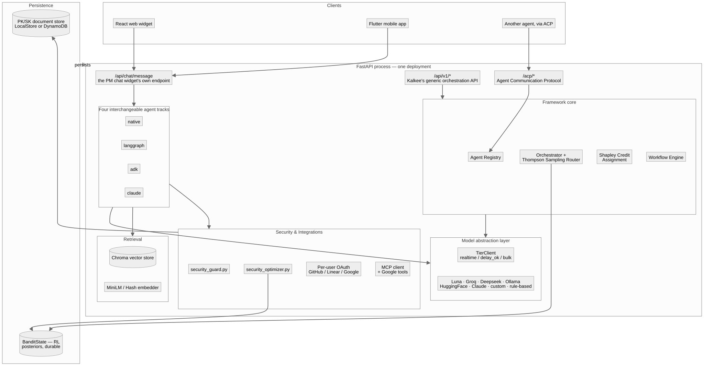
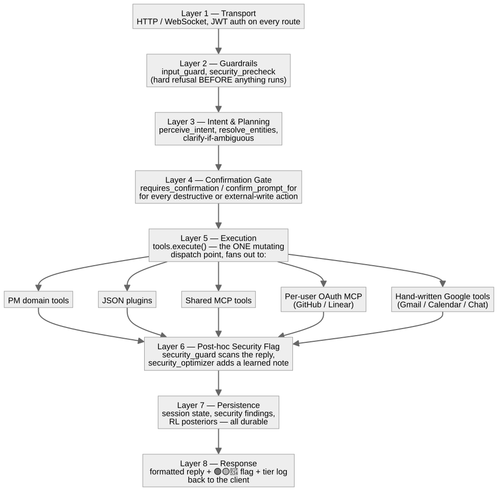
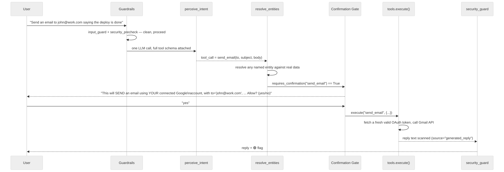
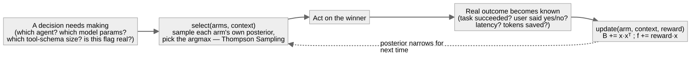
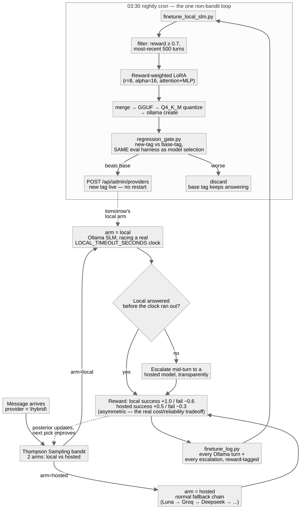
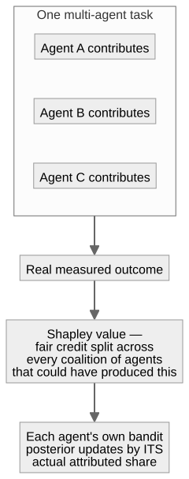

The Kalkee Journey — Video Script & Deep-Dive Companion
Purpose of this document: a narration-ready script, with embedded diagrams, meant to be fed into a video/podcast generation tool (e.g. NotebookLM's "video overview" or "deep dive" feature) to produce a ~15-20 minute walkthrough of the entire Kalkee system. Every diagram is real Mermaid — a generator can render it directly, or a narrator can describe it live. Every technical claim below is grounded in real code in this repository, not aspirational — where something is a pattern rather than a finished integration, that distinction is called out explicitly, on purpose, so the video never overclaims.
Suggested pacing for a longer, fully-detailed video is noted at each
section header (⏱). Total: ~34 minutes of narration at a natural
speaking pace, plus diagram dwell time — this expanded version trades
the original 15-20 minute target for full box-by-box architecture
coverage, the named "Algo AI Layer" auto-model-selection explainer, a
detailed 7-way competitor comparison table (OpenWorker, OpenRouter,
LiteLLM, CrewAI, AutoGen/AG2, LangGraph Platform), how the
UI/PM-backend/Kalkee pieces actually deploy and connect, the adaptive
MCP/ACP and Hybrid-mode deep dives, the data-security highlight, the
admin Security dashboard, and a full technology/file-structure
reference. For a tight 15-20 minute cut, keep sections 1, 1b, 2 (table
only, skip the per-competitor narration), 3 (diagram only, skip 3b's
per-box narration), 3c, 4, 6, 7, 7b, and 14, and skip
9b/9c/10b/10c/13/Appendix B. For a short, executive-audience version,
use VIDEO_SCRIPT_EXECUTIVE.md instead — a separate 5-10 minute script
written for a non-technical/business audience.
🎬 Cold Open ⏱ 0:00–0:30
[VISUAL: Kalkee logo / title card, then a single chat bubble typing "Create a task called Fix login bug, assign it to Rohan, due Friday" and a reply appearing instantly]
NARRATION:
Somewhere between "just call the OpenAI API" and "build your own AGI lab," there's a real, practical question every team building an AI product eventually hits: how do you route a request to the right model, the right agent, the right tool — and get better at that routing over time, automatically, without a human re-tuning thresholds every week? This is the story of Kalkee: a system built to answer that question for real, in production, with real users.
1. What is Kalkee? ⏱ 0:30–1:30
[VISUAL: The full name spelling itself out letter by letter]
NARRATION:
Kalkee stands for Multi-Agent GenAI Network with Evolving Training and Orchestration. Every word in that name is doing real work:
- Multi-Agent — not one chatbot, a registry of independently swappable agents, each declaring what it's good at.
- GenAI Network — those agents, plus every model provider behind them, form a network the system routes across, not a fixed pipeline.
- Evolving Training — the system doesn't just serve requests, it learns from the outcome of every one, nightly fine-tuning its own local model on the turns it handled best.
- Orchestration — a real workflow engine underneath, capable of sequential, parallel, hierarchical, consensus, fallback, and retry execution patterns across multiple agents on one task.
It started life under a different name — you'll see
gmaofnin some older file paths, an artifact of the framework's original identity before this rename — but the architecture underneath has been consistent throughout.Concretely, it's one FastAPI process combining: a generic, domain-agnostic orchestration core; a first "tenant" application built on top of that core — a project-management assistant called
pm-agent; a vendor-neutral model abstraction layer; a retrieval (RAG) layer; and now, a full security-and-integrations layer covering Gmail, Calendar, Google Chat, GitHub, and Linear.
1b. The Algo AI Layer — every prompt automatically finds its own model ⏱ 1:30–2:15
[VISUAL: a single typed prompt, with three quick decision badges lighting up in sequence: "Tier: realtime" → "Provider: Groq" → "Params: low-latency"]
NARRATION:
One idea worth naming clearly, because it's the thing a user never sees happening: nobody ever picks a model for a given prompt. Every single message that comes in triggers the same three-step decision, automatically — call it the Algo AI Layer.
First, a fast, free, local classifier — no model call at all — tags how urgent and how complex the request looks: a normal chat turn is realtime, an explicit report or digest ask is delay-ok, background work is bulk. Second, that tier's own real fallback chain decides which provider actually answers — Luna, then Groq, then Deepseek, then a local Ollama model, down to a fully offline floor — or, if Hybrid mode is on, this exact step is replaced by the learned local- versus-hosted bandit covered later in this video. Third, once a provider is chosen, one more learned decision picks the actual generation parameters for that specific call, tuned from real latency and success on that exact provider.
Three real decisions, stacked, on every single prompt, with zero manual configuration required — and the deep math behind steps two and three is covered fully in sections six and ten-b.
2. How is this different from OpenWorker and "the rest out there"? ⏱ 2:15–5:15
[VISUAL: A two-column comparison — "Typical coding-agent harness" vs "Kalkee"]
NARRATION:
There's a real, fair comparison to make here, so let's make it honestly rather than just claiming to be better.
Tools like OpenWorker are, at their core, one harness around one model choice — you pick a backend (local open-weight, or a hosted API), the harness gives that model tools, and you audit the harness because it's open source. That's a genuinely good idea, and Kalkee borrows the same instinct in its own security-agent design.
But Kalkee's shape is different in three structural ways:
First — it's not one model, it's a network the system routes across automatically. Every chat turn walks a real fallback chain — Luna, then Groq, then Deepseek, then a local Ollama model, down to a fully offline rule-based floor if every hosted provider is unreachable — and a reinforcement-learning layer decides, per call, which generation parameters, which tool-schema size, and even which agent should handle the task, learning from real outcomes instead of a human tuning weights.
Second — it's not one agent, it's a registry.
pm-agentis the first tenant, not the whole product. A coding agent, a general-purpose agent on the public Claude API, and three real security-scanning agents already sit in the same registry, competing for tasks that declare matching capabilities, scored by the exact same learning algorithm. Adding a new domain is one new file, not a fork.Third — where OpenWorker's cybersecurity agents were a new announcement, Kalkee had already built the same category of capability independently, and pushed it further: not just code-vulnerability scanning, but a real, no-API-key call to OSV.dev — Google's actual public vulnerability database — for every dependency in a
requirements.txt, real Dockerfile/Kubernetes misconfiguration pattern-matching, and — new in this round — a security layer that doesn't just scan code, it scans every chat turn: the user's own prompt, and everything read back from a connected Gmail inbox, calendar, or chat — flagged 🟢🟡🔴, with a reinforcement-learning layer that gets better at knowing which flags actually mattered, from real user yes/no decisions, over time.That last piece — continuous learning applied to the security layer itself, not just to routing — is the newest and, we think, the most distinctive part of this system, and it's covered in depth later in this video.
It's worth naming the other real, popular tools people actually compare this to, one by one, rather than leaving it at "OpenWorker."
[VISUAL: render this exact comparison table — from README.md's
"How Kalkee compares" section — one row appearing at a time]
| OpenWorker | OpenRouter | LiteLLM | CrewAI | AutoGen / AG2 | LangGraph Platform | Kalkee | |
|---|---|---|---|---|---|---|---|
| What it fundamentally is | Coding-agent harness, pick your own model backend | LLM API gateway/marketplace (300+ models) | Open-source LLM gateway/proxy | Multi-agent framework (Crews/Flows) | Multi-agent conversation framework | Graph-based agent orchestration + hosted deploy platform | Multi-agent orchestration framework, PM app as first tenant |
| Routing that learns from real outcomes (RL/bandit) | Not documented | No — deterministic price/latency rules | No — explicit strategies | No (RL is an external add-on, not built in) | No (same external add-on) | No — architectural, not learned | Yes — Thompson Sampling, 9 real optimizers |
| Built-in security-scanning agents (real SAST + real vuln-DB + cloud-config) | Announced 3 agents | None | None ("guardrails" = content moderation) | None built-in | None built-in | None built-in | Yes — real OSV.dev calls |
| Live conversational security layer, 🟢🟡🔴 | Not documented | N/A | N/A | N/A | N/A | N/A | Yes, with an RL confidence layer |
| General framework — new domain = new agent | Not really | No | No | Yes | Yes | Yes | Yes |
| Built-in RAG | Not emphasized | No | No | Via 3rd-party tool | Yes — real, built in | Via LangChain integration | Yes — RL-picked source+algorithm |
| Local model as a first-class routed option, zero-egress floor | Yes — its whole pitch | No | Partial, no learned routing | Model-agnostic only | Model-agnostic only | Model-agnostic only | Yes — Hybrid mode + offline floor |
| Nightly self-fine-tuning from real usage | Not documented | No | No | No | No | No | Yes — reward-weighted LoRA |
NARRATION:
OpenRouter and LiteLLM are the two most-used LLM API gateways — genuinely useful, and the RIGHT choice if all you need is one API key covering many models. Neither does anything close to adaptive learning: OpenRouter's own documentation describes deterministic price-and-latency-weighted routing, and LiteLLM's router picks from explicit named strategies — least-busy, cost-based — not a posterior that updates from real outcomes. Neither ships a security-scanning agent, an agent registry, or RAG.
CrewAI and AutoGen — now AG2 — are the two leading open-source multi-agent frameworks, and structurally the closest cousins to this system: both let you compose a new capability as a new agent, the same principle section twelve covers for Kalkee. Neither has built-in adaptive routing — the "RL" that shows up in searches about either one traces to a separate Microsoft research project that trains agents built with these frameworks, not a routing capability either ships natively. AG2 does have a real, genuinely built-in RAG capability, more than most competitors here — but neither framework includes a security-scanning agent or a live conversational safety layer.
LangGraph Platform takes a different, architectural approach to safety — locking a planner's output into a fixed graph so an executor can't improvise outside its scoped toolset, a real and reasonable defense against prompt injection. It's a different mechanism than this system's learned, per-message security flag, not a worse one — just not a learning one.
The honest summary, not a sales pitch: if you only need a model gateway, OpenRouter or LiteLLM is simpler and probably the right call. If you need a general multi-agent framework with a bigger ecosystem today, CrewAI or AutoGen/AG2 has more third-party integrations built by more people. What Kalkee bets on is the combination — adaptive, self-improving routing, AND real security scanning, AND a general agent framework, together, in one system, rather than picking one of those and living without the others.
3. Architecture, top to bottom ⏱ 5:15–7:15
[VISUAL: render this diagram, hold for the full narration]

NARRATION:
At the very top, three kinds of clients: the React web widget most users see, a Flutter mobile app talking to the exact same API, and — this is a real, working capability, not aspirational — another AI agent, talking to this system as a peer over the Agent Communication Protocol, ACP.
Underneath, one FastAPI process, but with two genuinely different entry points into it. The chat widget's own endpoint,
/api/chat/message, is the older of the two — it picks between four interchangeable "tracks" that all implement the exact same seventeen-step conversational algorithm: a reference implementation callednative, a real LangGraphStateGraphversion with genuine pause-and-resume for confirmations, a Google ADK version, and a version pinned to the real Anthropic Claude API. All four are required to be behaviorally identical — that's a hard equivalence rule enforced by shared test suites, not just a design intention.The newer entry point,
/api/v1/*, is Kalkee's own generic orchestration API — capability-based, not tied to project management at all. A task declares what it needs; the Orchestrator, powered by a contextual Thompson Sampling router, picks the best-scoring registered agent for it, in real time, from a pool that competes purely on capability tags.Both entry points share the same model abstraction layer underneath — no agent, no track, ever talks to a provider SDK directly — and the same retrieval, security, and integrations layers. That sharing is the whole architectural point: build a capability once, and every track, every agent, gets it for free.
3b. The orchestration pipeline, box by box ⏱ 7:15–10:45
[VISUAL: hold on this exact arrow diagram — from ARCHITECTURE.md —
scrolling slowly downward as each box is narrated]
┌───────────────────────────────────┐
Application / User ─────►│ POST /api/v1/orchestration/execute│
└────────────────┬──────────────────┘
▼
┌───────────────────────────────────┐
│ TASK UNDERSTANDING (task.py) │
│ text + TaskContext: │
│ task_type, complexity, │
│ required_capabilities, budget, │
│ latency_requirement, requires_rag │
└────────────────┬──────────────────┘
▼
┌──────────────────────────────────────────────┐
│ CAPABILITY PRE-FILTER (orchestrator.py) │
│ candidates := agents whose capabilities │
│ overlap task.required_capabilities │
│ (falls back to ALL agents if none match) │
└──────────────────────┬───────────────────────┘
▼
┌────────────────────────────────────────────────────────────┐
│ ADAPTIVE AGENT ASSIGNMENT ENGINE (router.py) │
│ │
│ utility_prior(a, T) ──seeds──► Thompson Sampling │
│ (§3's U(a|T) heuristic, contextual bandit │
│ cold-start only) (learns from real │
│ feedback over time) │
│ │
│ per candidate agent: sample θ_a, score = θ_a · x(T) │
│ argmax(score) ──► SELECTED AGENT (the "lead") │
└──────────────────────────────┬───────────────────────────────┘
▼
┌─────────────────────────────────────────────┐
│ AGENT NETWORK (network.py) │
│ lead missing a required capability? │
│ yes ──► capability_neighbors() finds workers │
│ no ──► lead runs alone │
└───────────────────┬─────────────────────────┘
▼
┌───────────────────────────────────────────────────────┐
│ WORKFLOW ENGINE (workflow.py) │
│ SequentialStep │ ParallelStep │ ConsensusStep │ │
│ FallbackStep │ RetryStep │ HierarchicalStep │
│ (which shape runs is DECIDED above, not hard-coded) │
└───────────────────────────┬───────────────────────────────┘
▼
┌──────────────────────────────────────────────────────────────────────┐
│ AGENT EXECUTION │
│ │
│ pm-agent ──────────► (wraps the ENTIRE existing PM chatbot, │
│ see §2 below — its own framework picker, │
│ model tier chain, and session memory │
│ all still run exactly as before) │
│ pm-agent-adk ───────► same PM chatbot, pinned to Google ADK's │
│ Runner/LlmAgent track specifically │
│ openclaw-agent ─────► direct Anthropic Claude call, no PM tools │
│ coding-agent ───────► code generation + real ast.parse validation │
│ mcp-utility-agent ──► tool set is ENTIRELY MCP-sourced │
│ (agent/mcp_client.py) — proves MCP is a real │
│ capability source, not PM-only │
│ langchain-research-agent ► a real langchain_core Runnable + a real │
│ BaseRetriever over Kalkee's own RAG store │
│ code-security-agent, supply-chain-agent, cloud-config-agent ──► │
│ real static-pattern / OSV.dev / IaC-config │
│ security scans — deterministic, never an │
│ LLM guessing (see §7 below) │
│ <your agent> ───────► native Python (Agent subclass) OR a │
│ RemoteHttpAgent proxying to any webhook │
└───────────────────────────────────┬────────────────────────────────────┘
▼
┌────────────────────────────────────────────────────┐
│ MODEL ABSTRACTION LAYER (llm/router.py) │
│ Luna → Groq → DeepSeek(shadow) → Ollama → rule-based │
│ (realtime tier; delay_ok/bulk have their own chains) │
│ + claude, huggingface, custom — NOT in a chain, │
│ answer only when explicitly preferred, same │
│ graceful fallback if unconfigured │
└────────────────────────┬───────────────────────────────┘
▼
┌────────────────────────────────────────────────────┐
│ RAG (rag.py) + TOOLS (tools.py) + MCP │
│ ChromaVectorStoreAdapter / InMemoryVectorStoreAdapter │
│ PM tools + JSON plugins + MCP-discovered tools │
└────────────────────────┬───────────────────────────────┘
▼
Execution result
▼
┌────────────────────────────────────────────────────┐
│ EVALUATION & FEEDBACK (feedback.py) │
│ agent.evaluate() self-score, OR a later human │
│ POST /api/v1/feedback rating │
└────────────────────────┬───────────────────────────────┘
▼
┌────────────────────────────────────────────────────┐
│ SHAPLEY CREDIT ATTRIBUTION (shapley.py) │
│ splits ONE observed reward across every agent │
│ that actually participated, fairly (§4 below) │
└────────────────────────┬───────────────────────────────┘
▼
┌────────────────────────────────────────────────────┐
│ REWARD CALCULATION (reward.py) │
│ R = α·Quality + β·Success + γ·Feedback │
│ − δ·Cost − ε·Latency − ζ·Failure │
└────────────────────────┬───────────────────────────────┘
▼
┌────────────────────────────────────────────────────┐
│ POLICY UPDATE │
│ • each agent's Thompson Sampling posterior updated │
│ with ITS Shapley-attributed reward │
│ • α..ζ above nudged toward whichever term actually │
│ tracked the outcome (AdaptiveWeights.update) │
└────────────────────────┬───────────────────────────────┘
│
└──────────────────► back into the
Adaptive Router,
improving the
NEXT task's pick
NARRATION — one paragraph per box, in order:
POST /api/v1/orchestration/execute. This is the single front door for anything that isn't the PM chat widget — one JSON body in,{task, context}, and everything below this line is what turns that into a real, executed, learned-from action.Task Understanding —
task.py. The raw text gets wrapped in aTaskContext: what kind of task this is, how complex it looks, which capabilities it needs, a cost budget, a latency requirement, and whether it needs retrieval at all. This is the structured object everything downstream actually reasons about — not the raw string.Capability Pre-Filter —
orchestrator.py. Before any learning algorithm runs, a cheap, deterministic filter narrows the field: only agents that actually declare a capability overlapping what this task needs are even considered. If literally nothing matches — a genuinely new kind of task — it falls back to considering every registered agent rather than failing outright.Adaptive Agent Assignment Engine —
router.py. This is section six's Thompson Sampling math, applied here specifically. A hand- designed utility heuristic seeds a brand-new agent's very first guess — cold-start only, so a never-tried agent isn't unfairly starved — and from the first real outcome onward, the learned posterior takes over. Every candidate gets one random sample drawn from its own belief distribution; whichever sample is highest wins and becomes the "lead" agent for this task.Agent Network —
network.py. The lead agent might not be able to do the whole task alone — it might need a capability it doesn't have. If so,capability_neighbors()finds real teammates from the registry with the missing capability. If the lead is fully self-sufficient, it just runs solo — no unnecessary coordination overhead.Workflow Engine —
workflow.py. When more than one agent is involved, how they coordinate is itself a real, chosen shape, not a hardcoded assumption: sequential (one after another), parallel (all at once), consensus (multiple attempts, best/majority wins), fallback (try the next if one fails), retry, or hierarchical (a lead delegating to workers). Which shape fits gets decided above this box, not baked in.Agent Execution. This is where the actual work happens, and nine agents ship registered by default. Notice
pm-agenthere doesn't reimplement anything — it wraps the entire pre-existing PM chatbot, framework picker, model tiers, session memory and all, completely unchanged underneath;pm-agent-adkis that exact same chatbot again, just pinned to Google ADK's own Runner/LlmAgent track specifically, so it's independently routable and independently scored.openclaw-agentis a direct line to the public Claude API with no PM tools attached.coding-agentgenerates code and actually runs it through Python's realast.parseto check it's syntactically valid — not a model grading its own homework.mcp-utility-agent's entire tool set comes from external MCP servers, proving that's a real capability source, not something bolted onto the PM domain only.langchain-research-agentis a genuinelangchain_coreRunnable with a realBaseRetrieverwired to Kalkee's own RAG store — proof LangChain agents aren't second-class citizens here either. And the three security agents —code-security-agent,supply-chain-agent,cloud-config-agent— get their own deep dive in section seven. And your agent — anything you register — slots in exactly the same way, either as native Python or as a webhook this system never needs to see the source code of.Model Abstraction Layer —
llm/router.py. No agent above this line ever talks to a provider SDK directly. Every model call walks a real fallback chain — Luna first, then Groq, then Deepseek running in shadow mode, then a local Ollama model, all the way down to a fully deterministic, offline rule-based floor if every hosted provider is unreachable. Claude, HuggingFace, and any custom endpoint sit outside that automatic chain, answering only when a track explicitly asks for them by name, with the identical graceful fallback if unconfigured.RAG + Tools + MCP. Retrieval, the built-in tool set, JSON-defined plugins, and anything pulled in from external MCP servers all merge into one indistinguishable set here — the model reasoning above never knows or cares which category a given tool came from.
Evaluation & Feedback —
feedback.py. Once there's a real execution result, it gets scored — either the agent's ownevaluate()self-assessment, or, later, a real human rating viaPOST /api/v1/feedback. Either becomes real signal, not assumed success.Shapley Credit Attribution —
shapley.py. If more than one agent actually participated, the ONE observed reward for the whole task doesn't get split evenly or arbitrarily — a real Shapley value is computed, considering every possible sub-combination of contributing agents, so each agent's actual marginal contribution determines its share.Reward Calculation —
reward.py. The final scalar reward blends six real terms — quality, task success, human feedback, cost, latency, and outright failure — each with its own weight,R = α·Quality + β·Success + γ·Feedback − δ·Cost − ε·Latency − ζ·Failure.Policy Update. Two things happen with that reward, together: each participating agent's own Thompson Sampling posterior updates with its Shapley-attributed share — narrowing that agent's belief distribution for next time — AND the α-through-ζ weights above themselves nudge toward whichever term actually tracked the real outcome (
AdaptiveWeights.update), so even the definition of "good" adapts over time, not just the routing decision. Both loops feed straight back into the Adaptive Router at the top, improving the very next task's pick.
3c. How the pieces actually connect — UI, PM backend, and Kalkee ⏱ 10:45–12:00
[VISUAL: render this exact diagram]
┌────────────────────────────────────────────────────────────────────┐
│ ONE nginx origin — one port, no CORS needed │
│ (tool_layer/frontend/nginx.conf) │
│ │
│ location / location /api/*, /ws location /chatbot/* │
│ (serves the SPA) (reverse-proxied) (prefix stripped, │
│ │ │ reverse-proxied) │
└────────┼─────────────────────┼────────────────────────┼──────────────────┘
│ │ │
▼ ▼ ▼
┌─────────────────┐ ┌─────────────────────┐ ┌──────────────────────────┐
│ React SPA │ │ tool_layer/backend │ │ orchestrator_framework_ │
│ (static files, │ │ (PM CRUD API — spaces, │ │ layer/akanade/backend │
│ ONE frontend │ │ projects, tasks, auth, │ │ — Kalkee itself: chat, │
│ container, │ │ DynamoDB) │ │ RL, RAG, security, │
│ image: algo- │ │ image: algo- │ │ integrations │
│ kaizen-frontend) │ │ kaizen-backend │ │ image: algo-kaizen-chatbot │
│ │ │ │ │ │
│ api/client.ts │ │ │ │ api/chatbot.ts │
│ → apiClient │ │ │ │ → chatbotClient │
└─────────────────┘ └─────────────────────┘ └──────────────────────────┘
NARRATION:
Everything in this video so far has been "what happens inside Kalkee once a request reaches it." This is the piece connecting that to an actual browser — three separately built, separately deployed Docker images, sitting behind one nginx origin so the browser never makes a cross-origin request at all.
The React single-page app is ONE codebase — the same
ChatAssistant.tsxchat widget, the same admin Security dashboard, the same Integrations settings page all live in this one frontend, not a separate "chatbot UI." What makes it talk to two completely different backends is two separate, deliberately independent API clients:apiClientfor everything PM-related — projects, tasks, users, the admin dashboards — andchatbotClient, pointed at Kalkee specifically, with a much longer timeout because a real model call can legitimately take far longer than a normal CRUD request.nginx is what makes this invisible to the browser:
/api/*and/wsget reverse-proxied to the PM backend container, and/chatbot/*gets its prefix stripped and reverse-proxied to the Kalkee container — three containers, one origin, zero CORS configuration needed anywhere, and the frontend image never needs to know a deployment-specific URL for either backend baked in at build time.This is also, concretely, the answer to "which Docker images actually need rebuilding when something changes": a change to
tool_layer/frontend— a new page, a new dashboard — means rebuilding and pushingalgo-kaizen-frontend; a change to Kalkee's own backend code means rebuildingalgo-kaizen-chatbot; the two are genuinely independent deployments that happen to share one nginx origin at runtime.
4. The layer diagram ⏱ 12:00–14:00
[VISUAL: render this diagram]

NARRATION:
Every single request, regardless of which track answers it, moves through the same eight layers. Transport and auth first — every route is JWT-protected, no exceptions. Then guardrails: a fast, deterministic refusal gate that runs before any model call, catching obvious prompt-injection phrasing and a newer, broader security pre-check covering things like credential-exfiltration requests.
Then intent and planning: one model call figures out what tool, if any, the message maps to, and resolves any named entity — a project, a person — against real data, never guessing an ID.
Layer four is the confirmation gate, and it's worth pausing on: every destructive action, every external tool call — whether that's an MCP server this deployment doesn't control, or a write to the user's own connected Gmail account — stops and asks a plain-English yes or no question, showing the exact arguments, before anything executes.
Layer five is the one and only place mutation actually happens —
tools.execute()— and it fans out to five different kinds of tools: built-in PM actions, JSON-defined plugins, shared MCP tools everyone gets, per-user OAuth MCP tools only the connecting user gets, and the hand-written Gmail/Calendar/Chat tools.After execution, a newer layer runs: the reply itself gets scanned for security concerns — did a fetched email try to inject instructions? — and a small reinforcement-learning layer attaches a confidence note if it's seen this exact pattern before.
Everything durable gets saved — the conversation, any pending confirmation, and now, the learned security state — and the response goes back with a full tier log so you can see exactly which model answered and why.
5. One request's actual journey ⏱ 14:00–16:00
[VISUAL: render this diagram]

NARRATION:
Let's trace one real example end to end. A user asks the assistant to send an email. Guardrails run first and find nothing concerning. One model call turns that sentence into a structured tool call —
send_email, with the recipient, subject, and body already extracted. Entity resolution confirms there's nothing ambiguous to clarify.Because
send_emailis a write action against the user's own real Google account, the confirmation gate fires — and this is the part worth emphasizing: the prompt shown to the user isn't a generic "are you sure?" — it names the exact tool, shows every argument verbatim, and explicitly says whose account it's about to act on. Only after an explicit "yes" does execution happen — fetching a fresh, valid access token and making the real Gmail API call.The reply text then gets one more pass through the security classifier before it's shown back to the user, and a 🟢 safe flag rides along with it. If any step along this chain — the original prompt, or anything the tool read back — had triggered a real security concern, that flag would have turned yellow or red instead, and a red flag would have stopped this whole chain before step one ever ran a model call.
6. How the reinforcement-learning layer works ⏱ 16:00–18:30
[VISUAL: render this diagram]

NARRATION:
Here's the single mathematical idea that powers nine completely different decisions in this system, from picking which agent handles a task, to deciding how big a tool schema to send a small local model, to deciding whether a security flag is usually a real concern or usually a nuisance, to — newest — deciding which provider to try first within a model tier, based on which one has actually been fastest and most reliable.
It's called contextual Thompson Sampling over a Bayesian linear regression posterior — that's a mouthful, so here's the plain-English version. For every option — every "arm" — the system keeps a running belief about how good that option is, expressed not as a single number but as a distribution: a best guess, plus how confident it is in that guess. When a decision needs making, instead of always picking the arm with the best average score, it draws one random sample from each arm's belief distribution and picks whichever sample comes out highest.
Why sample instead of just picking the best average? Because an option nobody's tried yet has a very wide distribution — huge uncertainty — so it occasionally wins that random draw purely on upside potential, and gets tried. An option with a long, consistent track record has a narrow distribution clustered right around its true value, so it keeps winning reliably. This is how the system explores new options without a human manually setting an exploration rate, and exploits what's already working, automatically, from the same formula.
Every real outcome — did the task actually succeed, did the user confirm or cancel, how much latency did this take — feeds back into updating that arm's belief, narrowing it. Do this enough times, and the system provably converges toward always picking the genuinely best option, without ever having been told in advance what "best" looks like.
Nine real optimizers in this codebase are built from this exact primitive: which agent handles a task, which framework track answers fastest, which generation-parameter combination to send a model, how big a tool schema a local model actually needs, which knowledge source and retrieval algorithm answers a query, whether a local model or a hosted one should answer this specific message, which security findings have actually mattered in practice, and — newest — which provider to try first within a tier's fallback chain. That last one replaced what used to be a hand-written, fixed order — Luna, then Groq, then Deepseek, then Ollama, always in that order — with a live ranking that shifts as real success rates and latencies come in. One primitive, nine applications, and two of them now carry durable state: the learned posteriors for the security layer and the provider layer both survive a full restart, saved to the same database every other piece of durable state in this system uses.
7. How the security agents work ⏱ 18:30–20:30
[VISUAL: three-panel split — a magnifying glass over code, a supply-chain graph, a cloud icon with a lock]
NARRATION:
There are two entirely different security systems in Kalkee, built for two different jobs, and it's worth being precise about which is which.
The first is static scanning agents — three of them, registered exactly like any other agent in the network. A code-security agent that pattern-matches for real dangerous constructs:
eval, shell commands withshell=True, unsafe deserialization, weak hashing, hardcoded secrets — every finding cited with a real file and line number. A supply-chain agent that parses a realrequirements.txtand makes a real, live HTTP call to OSV.dev — Google's actual public vulnerability database — for every dependency, no API key required. And a cloud-config agent that scans Dockerfiles, Kubernetes manifests, and Terraform for real misconfiguration classes: privileged containers, wide-open network access, containers running as root. All three follow one hard rule: the model never invents a finding — it only ever summarizes findings a deterministic scanner already produced.The second is the conversational security layer, and it's newer and works completely differently — it doesn't scan a codebase, it scans every chat turn, live. A pattern-matching classifier looks at the user's own prompt, and separately at anything read back from a connected Gmail inbox, calendar, or chat, and produces one of three flags: green for safe, yellow for needs review, red for an actual security risk. Reds — things like a direct request to expose an access token, or a request to bulk-forward someone's entire inbox to an outside address — get blocked before any tool ever runs, no exceptions, no confirmation prompt even offered. Yellows — a suspicious link, language trying to talk the assistant into skipping its own confirmation step — still let the action proceed through the normal confirmation gate, just visibly flagged.
And there's a real, deliberate distinction baked into the rules themselves: the exact same phrase — say, "ignore previous instructions" — is treated as more dangerous when it's found inside a fetched email than when the user types it themselves directly. Content the assistant reads should never be treated as a command it has to obey; that's the textbook definition of indirect prompt injection, and this system is built to recognize the difference between "the user asked this" and "something the user's inbox is trying to make the assistant do."
7b. The admin Security dashboard and daily report ⏱ 20:30–21:45
[VISUAL: a real-looking admin dashboard mockup — a table of flagged events, a "Daily Report" card with a written summary above it]
NARRATION:
A flag that only the flagged user ever sees is worth something — but an organization also needs to see the pattern across everyone, and that's what this adds. Every 🟡 or 🔴 flagged reply — never a 🟢 safe one, on purpose, so this stays real signal — gets logged to a durable table, and an Admin can open
/admin/securityand see it: who, when, which rule fired, a short excerpt, across every user in the organization, not just their own account.Alongside the raw event list sits a genuine daily report — not a canned template. One more real LLM call, the exact same "bulk tier, background housekeeping" pattern the conversation-memory summarizer uses, reads the real logged events for a given day and writes a plain-English digest: what kinds of things were flagged, whether any one person had a concerning pattern worth a real conversation, and a concrete recommendation if something stands out. And it's held to the same discipline as every other AI-generated summary in this system — the prompt explicitly forbids inventing an event that didn't happen, or claiming a clean day when the list isn't actually empty. If every model provider is unreachable when the report is generated, a real, honest, non-AI fallback — the actual counts, the actual affected users — is shown instead of silently failing.
Reports are cached per calendar day, so viewing yesterday's report twice doesn't burn a model call twice, and an Admin can force a fresh regeneration with one click if new events came in later. Access is gated at Admin role or above — a Member or Manager account gets a real, enforced 403, not a dashboard that just happens to look empty for them.
8. How RAG works here ⏱ 21:45–23:00
[VISUAL: render this diagram]
flowchart LR
Q[User query] --> IR{Is retrieval\nrelevant?}
IR -->|no| SKIP[Skip — no point\nquerying for "mark task done"]
IR -->|yes| REF[Refine the query —\nstrip filler, keep keywords]
REF --> SEL["RL picks the best\n(store, algorithm) pair"]
SEL --> V["vector\n(pure embedding similarity)"]
SEL --> LR2["lexical_rerank\n(wider net, keyword-reranked)"]
SEL --> HY["hybrid\n(blended vector + lexical score)"]
V & LR2 & HY --> CTX[Build context,\ncite every chunk actually used]
CTX --> LLM[Answer, with citations]
NARRATION:
Retrieval-augmented generation here isn't one fixed pipeline — it's itself a reinforcement-learning decision. First, a cheap check: is this message even the kind of thing retrieval could help with? "Mark this task done" gets no retrieval attempt at all; a genuine question does.
Documents live in a real Chroma vector store, embedded either with a genuine semantic model — MiniLM, running locally, no API call — or, when that's not installed, a deterministic hashed bag-of-words fallback that's stop-word filtered specifically to avoid a real, confirmed failure mode: two completely unrelated questions accidentally scoring as similar because they happened to share only common filler words.
The interesting part is the algorithm choice isn't fixed either. Pure vector similarity, a lexical-reranking pass that catches a keyword-exact chunk vector search under-ranked, or a hybrid blend of both — which combination of knowledge source and algorithm answers best for this kind of query is learned, per combination, by the exact same Thompson Sampling primitive from section six. And every answer that used retrieved context says exactly which chunks it used — never a black box.
9. Voice, MCP, and the PM tool set ⏱ 23:00–24:15
[VISUAL: microphone icon → waveform → chat bubble → tool icons]
NARRATION:
Voice input and output run through the exact same pipeline as typed text — speech becomes a transcript, the transcript is just another chat message, so every guardrail, every confirmation gate, every security flag applies identically whether you typed it or said it. Both the web widget and the Flutter mobile app share this design, and a real, previously-shipped bug — the microphone getting stuck in a listening state after certain errors — was traced to the browser/OS speech APIs' own inconsistent error handling and fixed by making sure every error path, not just the normal completion path, resets listening state.
The Model Context Protocol, MCP, is how this system pulls in tools from servers it doesn't own — a filesystem server, a fetch server, a real Notion integration — merged into the exact same tool set the model sees for built-in PM actions, completely indistinguishable to the model itself. Every MCP tool call requires that same explicit confirmation, and — a real, deliberate security decision — the human-facing confirmation prompt never shows the tool's own description text, only its name and arguments, because a tool's description is written to persuade a model, and an external server can put literally anything there.
The Agent Communication Protocol, ACP, is the mirror image: instead of this system consuming someone else's tools, it lets another agent treat this whole deployment as one callable peer — same auth, same underlying reply, just wrapped in ACP's own message envelope.
9b. MCP and ACP, used adaptively — not a fixed tool list ⏱ 24:15–25:15
[VISUAL: a tool palette that visibly grows and shrinks as a "Connect GitHub" toggle flips on/off]
NARRATION:
It's easy to hear "MCP support" and picture one fixed list of tools, baked in at startup, same for everyone. That's true for exactly ONE category here — the shared MCP servers in
MCP_SERVERS— discovered once when the process boots, identical for every user, needing a restart to change. Everything else genuinely adapts, live, per request:Per-user tool discovery. The moment a user connects their GitHub or Linear account, or their Google account, their OWN tool set — real write-capable tools scoped to THEM — appears in the model's tool schema on their very next message. No restart, no redeploy. Disconnect, and it disappears the same way. This is cached for a few minutes for efficiency, but the oauth router explicitly invalidates that cache the instant a connection changes, so "instant" is the real, tested behavior, not just the eventual one.
Adaptive dispatch. When a tool call comes in,
tools.execute()checks five different sources, in order, completely transparently to the model: is this a built-in PM action? A JSON plugin? A shared MCP tool? This specific user's own OAuth MCP tool? A hand-written Google tool? The model never has to know or care which — it just sees one merged list that happens to be different for every signed-in person.Graceful degradation, not a hard failure. An MCP server that's unreachable — misconfigured, offline, network partition — is logged and silently skipped at discovery time, never a startup crash. The available tool surface adapts to what's actually reachable right now, same philosophy applied to infrastructure as to identity.
ACP's own adaptive layer sits one level up from all of this: which framework track — native, LangGraph, or ADK — answers a given turn at all is itself picked from real, continuously-updated latency and error-rate history (
framework_stats.py), whether that turn came in through the chat widget or through another agent's ACP call. The adaptivity isn't one feature — it's the same principle, applied at every layer: tool availability, dispatch, infrastructure health, and even which internal implementation answers, all respond to real, current state instead of a fixed config.
9c. Wire-level view — UI to an external agent, with real technology at every hop ⏱ 25:15–26:30
[VISUAL: render this exact arrow diagram, panning down slowly]
┌──────────────────────────────┐
│ USER INTERFACE │
│ React + TypeScript (web, Vite) │
│ or Flutter + Dart (mobile) │
└───────────────┬──────────────┘
│ HTTPS, JSON body, "Authorization: Bearer <JWT>"
▼
┌──────────────────────────────┐
│ FASTAPI GATEWAY │
│ Pydantic request/response models,│
│ JWT auth dependency on every route │
│ (app/main.py, app/routers/*.py) │
└───────────────┬──────────────┘
│
▼
┌──────────────────────────────┐
│ AGENT TRACK / ORCHESTRATOR │
│ LangGraph StateGraph, or │
│ Google ADK Runner, or │
│ the native Python reference, │
│ or Kalkee's own capability-routed │
│ Orchestrator (/api/v1/*) │
└───────────────┬──────────────┘
│ get_llm_client() — the ONE sanctioned
│ entry to any model call
▼
┌──────────────────────────────┐
│ MODEL ABSTRACTION LAYER │
│ TierClient walks a real fallback │
│ chain → the winning provider's │
│ own SDK/HTTP call (httpx, or a │
│ vendor SDK: anthropic, huggingface_hub)│
└───────────────┬──────────────┘
│ tool_call decided by the model
▼
┌──────────────────────────────┐
│ TOOL DISPATCH — tools.execute() │
│ (the ONE mutating dispatch point) │
└──┬──────────┬──────────┬─────┘
│ │ │
▼ ▼ ▼
┌───────┐ ┌──────────────┐ ┌───────────────┐
│PM tool │ │ MCP client │ │ Google API │
│(direct │ │ (`mcp` SDK, │ │ client (httpx, │
│ Python) │ │ stdio subprocess │ │ real Gmail/Calendar/│
│ │ │ or SSE over HTTP) │ │ Chat REST endpoints) │
└───────┘ └──────┬───────┘ └───────────────┘
│ stdio pipe, or HTTPS+SSE
▼
┌─────────────────────────┐
│ EXTERNAL MCP SERVER │
│ (filesystem, fetch, Notion, │
│ any protocol-speaking third │
│ party — never this system's │
│ own code) │
└─────────────────────────┘
...and the REVERSE direction, another
agent reaching INTO this system:
┌──────────────────────────┐ HTTPS, JWT, ACP's own ┌──────────────────────────┐
│ EXTERNAL AGENT │ JSON message envelope │ POST /acp/runs │
│ any language, any host, │ ───────────────────────► │ (app/routers/acp.py) │
│ treats this whole deployment │ │ routes into the SAME registry, │
│ as one callable peer │ ◄───────────────────── │ same reply a widget user │
└──────────────────────────┘ ACP envelope back │ would have gotten │
└──────────────────────────┘
NARRATION:
One more way to see the whole system: follow one request, hop by hop, and name the real technology at each step. A React or Flutter UI sends an authenticated HTTPS call to a FastAPI gateway, where Pydantic validates the shape and a JWT dependency checks identity before anything else runs. That request reaches whichever agent track is answering — a real LangGraph graph, a real ADK Runner, or the plain Python reference implementation — which calls into the model abstraction layer through exactly one sanctioned function, never a vendor SDK directly. Whichever provider wins the fallback chain decides on a tool call, which lands at the single dispatch point, which fans out to a direct Python call, the MCP client library talking stdio or Server-Sent-Events to a real external process, or a plain
httpxcall to Gmail's actual REST API. And in the other direction entirely, a completely separate agent — written in any language, running anywhere — can reach INTO this system the exact same way a browser does, just through/acp/runsinstead of the chat widget's endpoint, authenticated the same way, routed through the same registry, getting back the same quality of reply.
10. Optimizers — the practical difference RL makes ⏱ 26:30–27:30
[VISUAL: a simple before/after — "fixed rule" vs "learned, per-context decision" — for two or three optimizers]
NARRATION:
It's worth translating section six's math into what a user actually notices. The token optimizer decides, per call, how much of the tool schema a small local model actually needs to see — because CPU-bound local models genuinely answer better with a trimmed schema, but only sometimes, and the system learns which "sometimes" from real retry and out-of-scope outcomes, not a hardcoded rule. The hybrid router decides, per message, whether a local model or a hosted one should answer — learning from real latency against a hard timeout, and real success. Query refinement learns whether rewriting a messy message before it reaches the model actually helped, or whether the rewrite drifted and the original wording should have been kept. None of these are configuration knobs a human tunes once and forgets — they are live, continuously updating decisions, and the newest one, the security-confidence layer, is the first of the eight built to survive a server restart.
10b. Hybrid mode, in depth — local model vs hosted, decided per message ⏱ 27:30–28:45
[VISUAL: render this diagram, then hold on it through §10c too — it's the local-SLM story end to end, inference AND nightly self-improvement]

NARRATION:
"Hybrid" is a real, third option sitting alongside "Auto" and "pick one specific model" in the provider selector — and it deserves its own explanation because it's one of the more unusual design choices in this system.
Here's what actually happens on each message when Hybrid is selected. The same Thompson Sampling bandit from section six runs with exactly two arms: local and hosted. It samples both arms' current belief distributions and picks one. If local wins, the request goes to the local Ollama SLM — but racing against a strict, real
LOCAL_TIMEOUT_SECONDSclock, not an unbounded wait. If the local model is still working when that clock runs out, the system doesn't make the user sit and watch a stuck request — it automatically escalates to a hosted model, mid-turn, transparently.The genuinely clever part is what happens after an escalation: the hosted model's real, successful answer gets logged as a training example specifically tagged as an escalation case (
finetune_log.log_hybrid_escalation_turn), which feeds directly into the same nightly LoRA fine-tune job described in the memory management section. In plain terms: every time the local model was too slow for a real request, that exact request-and-a-good-answer pair becomes tomorrow's training data for making the local model faster at handling that kind of request. The system isn't just choosing between local and hosted each time — over weeks, it's actively shrinking the set of requests that ever need to escalate at all.And the bandit's own reward signal is honest about both halves of that trade-off: real success, and real latency measured against the timeout — so "fast but wrong" and "right but too slow" both get penalized, and the arm that's actually best for a GIVEN kind of message wins more of that traffic over time, not a fixed 50/50 split.
10c. Connecting SLMs — the architecture's real data-security highlight ⏱ 28:45–30:00
[VISUAL: a padlock over a laptop, with a crossed-out cloud/network icon next to it]
NARRATION:
This is worth calling out as its own section, because it's the single biggest architectural difference for anyone evaluating this system for a security- or compliance-sensitive deployment, and it connects directly back to section two's OpenWorker comparison.
Connecting a small local language model is genuinely simple: point one environment variable,
OLLAMA_BASE_URL, at a local Ollama instance. No API key. No account. No third party ever sees the request. And once that's set, it's not a toy fallback — it's a real, selectable rung in Hybrid mode's own bandit, competing on equal footing with hosted providers for real traffic, winning it whenever it's actually the better choice.What that buys you, concretely: when the local model answers, the content of that message — a real task description, an email body being summarized, source code a security agent is scanning — never crosses the boundary of the machine or network it's running on. For regulated data, for source code a company can't send to a third party, for exactly the kind of legitimate security research that can trigger a hosted model's own safety refusals, that's not a nice-to- have, it's the whole point.
And this isn't limited to inference. The nightly fine-tuning job that makes the local model better over time runs entirely on the same local hardware, in real CPU-bound LoRA training — the model's own learning loop never phones home either. Quantization is what makes this practical on ordinary hardware in the first place: a 4-bit quantized local model is roughly a quarter the memory footprint of its full-precision original, verified with real math in
README_MEMORY_MANAGEMENT.md, not a rule of thumb.And underneath even that, there's a genuine floor: if every hosted provider AND the local model are unreachable, the system still answers — a fully deterministic, offline, rule-based responder that makes zero network calls of any kind. This system was built so that "how much can leave this machine" is a real, continuous dial an operator controls — from fully offline, to local-first with occasional hosted bursts via Hybrid mode, to fully hosted — not a binary choice baked in at deploy time.
11. Adaptive learning and weights ⏱ 30:00–31:00
[VISUAL: render this diagram]

NARRATION:
When more than one agent contributes to a single task — the workflow engine's whole reason for existing — a real question comes up: who gets credit for the outcome? This system doesn't guess or split it evenly. It computes a genuine Shapley value — a concept from cooperative game theory — considering every possible sub-combination of contributing agents and each one's marginal contribution, so credit is attributed fairly, not arbitrarily. That attributed reward is what actually updates each agent's own learning posterior, which is why the routing decision in section six stays honest even when tasks span multiple agents.
And now, for the first time, some of these learned weights aren't just live in memory — they're durable. The security layer's learned confidence in each detection rule is snapshotted to the same database every other piece of persistent state uses, so a redeploy doesn't silently erase months of learning. That's the pattern the rest of the optimizers can adopt next.
12. How 25+ external integrations become possible ⏱ 31:00–32:00
[VISUAL: a hub-and-spoke diagram — Kalkee in the center, spokes labeled "LLM providers," "MCP servers," "OAuth apps," "webhook agents"]
NARRATION:
Here's an honest, important distinction: what makes dozens of integrations possible here is one repeated architectural pattern, not twenty-five separately hand-built connectors. Four config-driven registries, each following the identical shape:
Any OpenAI-compatible LLM provider — Together, OpenRouter, a self-hosted endpoint — joins the model fallback chain via one JSON entry, no code change. Any MCP server — filesystem access, a real external SaaS tool that speaks the protocol — joins the shared tool set the same way. Any OAuth-based service — this system ships GitHub, Linear, and Google, covering Gmail, Calendar, and Chat, for real, tested, with per-user tokens encrypted at rest — follows one consistent provider-registry shape that a fourth, fifth, or twentieth service can be added to by implementing the same three functions: exchange a code for a token, fetch a valid token, call the real API. And any external agent, in any language, hosted anywhere, joins the agent registry via one webhook registration call — Kalkee never needs to see its source code.
That's the honest claim: not "25 integrations already wired," but "a proven pattern, exercised for real across four different registries, that scales to as many integrations as there are config entries" — and every one of the ones actually built ships with the identical confirmation-gate and security-flag guarantees as everything else in this system, because those guarantees live at the shared dispatch layer, not duplicated per integration.
13. The technology stack, briefly ⏱ 32:00–33:00
[VISUAL: four labeled panels — Backend, Frontend, Mobile, Infra — logos/names appearing as each is named]
NARRATION:
Quickly, what this is actually built with, for anyone who wants to go read the code next.
Backend: Python, FastAPI as the web framework, Pydantic for every request/response shape. LangGraph and
langchain-corepower the real StateGraph track; Google's own ADK library powers the ADK track. Every reinforcement-learning decision runs on NumPy — no separate ML framework, no PyTorch dependency in the serving path — because Bayesian linear regression over a handful of features doesn't need one. Retrieval runs on ChromaDB, withsentence-transformers' MiniLM model for real semantic embeddings when it's installed. Auth is PyJWT; every outbound HTTP call — to a model provider, to Gmail, to GitHub — goes throughhttpx. OAuth tokens are encrypted at rest with thecryptographylibrary's Fernet scheme. The optional real model providers include Groq, DeepSeek, Anthropic's own SDK for Claude, and Hugging Face's Hub SDK — every one of them wrapped behind the same abstraction layer from section three, so none of these are a hard dependency of the system itself.Frontend web: React, TypeScript, Vite as the build tool,
react-router-domfor routing,axiosfor API calls, and Zustand for the small amount of global state — auth session, mainly — that genuinely needs to live outside any one component.Mobile: Flutter and Dart, with Riverpod for state management, Dio for networking,
go_routerfor navigation, andflutter_secure_storagefor tokens — deliberately the platform-appropriate secure storage API, not shared prefs.Infrastructure: Docker for every deployable image, DynamoDB — or
dynamodb-localfor development — as the optional production persistence backend behind the same tiny document-store interface every table in this system already uses, and plain JSON-file storage as the zero-infrastructure default everything runs against out of the box.pytestis the test runner behind every "passing" claim in this video.Protocols, not just libraries: OAuth 2.0 for every per-user external connection, the Model Context Protocol for external tool discovery, and the Agent Communication Protocol for this system being reachable as a peer by other agents — all three are real, independent, published specifications this system implements, not proprietary formats invented for this project.
14. How to contribute ⏱ 33:00–33:45
[VISUAL: a simple numbered checklist]
NARRATION:
If you want to add to this system, here's the real, honest path, step by step:
One — read
README_NEW_AGENT_GUIDE.mdstart to finish before writing code; it walks a real, minimal agent and a real, complete one, example by example.Two — for a new domain capability, subclass
Agent, implement the six-step interface, and do REAL validation invalidate()— a syntax check, a schema check, something that can actually fail, never just a confidence number the model made up about itself.Three — for anything that writes to an external system, follow the established pattern: it must go through the shared confirmation gate, its prompt must show exact arguments, and if it reads external content back, that content must pass through the security classifier before a user ever sees it. That guarantee is not optional and not per-integration — it's structural.
Four — write real tests, run the full suite, and update the relevant README — this system's documentation discipline has been to never claim a capability the tests don't actually prove, and every contribution should hold that same line.
Five — register your agent, open a pull request, and the exact same Thompson Sampling router that's been picking between every other agent in this system will start learning where your new one fits in, from its very first real task.
🎬 Closing — Thank You ⏱ 33:45–34:00
[VISUAL: fade to the Kalkee name one more time]
NARRATION:
Kalkee was built on one repeated idea: build a capability once, at the shared layer, and let every track, every agent, every integration inherit it for free — routing, retrieval, security, confirmation, and now, continuous learning, all as one coherent system instead of twenty separate ones. Thank you for watching, and thank you to everyone who contributes the next agent, the next integration, or the next real security finding this system learns from.
Appendix B — full repository map, what each file does
Reference material, not narrated at video pace — pause here, or use this as the on-screen reference card during section 3b/9c. Organized by directory; every file listed is real and current as of this script.
backend/app/ — top-level files
| File | What it does |
|---|---|
main.py |
The FastAPI app itself — wires every router, runs startup (seed demo data, bootstrap agents), the one /api/health endpoint |
config.py |
Every environment-driven setting — model provider keys, MCP_SERVERS, OAuth client ids, storage backend — one Settings class, .env-loaded |
models.py |
Every Pydantic request/response shape (ChatReply, ProviderIn/Out, etc.) |
auth.py |
JWT decode + role-hierarchy dependency (require_role), and the bridge to the REAL app's own /api/users/me when configured |
db.py |
The tiny PK/SK document-store abstraction — LocalStore (JSON files) or DynamoStore (real DynamoDB), one interface either way |
crypto.py |
Fernet encryption for OAuth tokens at rest |
security_guard.py |
The deterministic 🟢🟡🔴 pattern-matching classifier |
security_optimizer.py |
The RL layer learning confidence on top of security_guard's findings |
security_events.py |
Durable log of 🟡/🔴 flagged events — the admin Security dashboard's source of truth |
security_report.py |
LLM-summarized daily security digest, cached per calendar day |
oauth_store.py |
Per-user OAuth token storage, refresh, revoke |
seed.py |
Demo data (users, spaces, projects, tasks) for a zero-setup first run |
plugins.py |
The JSON-defined-tool loader (plugins.d/*.json) — a new PM action with no Python |
backend/app/oauth/
| File | What it does |
|---|---|
providers.py |
Static registry: GitHub/Linear/Google's real OAuth endpoints + scopes |
state.py |
Signed, short-lived state param — the CSRF defense for the OAuth callback |
backend/app/agent/ — the four chat tracks + shared tool layer
| File | What it does |
|---|---|
native_agent.py |
The reference implementation of the 17-step conversational algorithm — every other track imports its shared helpers |
langgraph_agent.py |
The same algorithm as a real LangGraph StateGraph, with genuine pause/resume via interrupt() |
adk_agent.py |
The same algorithm driven by Google's ADK Runner, with a custom BaseLlm bridging to this system's own model router |
claude_agent.py |
Pins the real Anthropic Claude API as the preferred model, reuses every other step from native_agent.py |
tools.py |
Every built-in PM tool function, entity resolution, and the ONE mutating dispatch point, execute() |
google_tools.py |
The six hand-written Gmail/Calendar/Chat tools + per-user availability |
mcp_client.py |
Consumes shared, static MCP servers (MCP_SERVERS config) |
user_mcp_client.py |
Consumes per-user OAuth-connected MCP servers (GitHub, Linear) |
sessions.py |
Chat session load/save, rolling message window |
memory.py |
Folds trimmed-off messages into a running summary via one more LLM call |
state.py |
AgentReply — the one shape every track returns; format_result() |
finetune_log.py |
Logs real turns as nightly fine-tune training data, with the reward heuristic |
plugins.py (re-exported), adapter.py |
Framework-track picking for the chat widget's own endpoint |
backend/app/framework/ — the generic orchestration core (formerly gmaofn/)
| File | What it does |
|---|---|
agent_base.py |
The Agent abstract base — the six-step interface every registered agent implements |
registry.py |
The agent registry — register, list, get by id |
orchestrator.py |
Capability pre-filter + hands off to the router |
router.py |
ContextualThompsonRouter — agent selection via Thompson Sampling |
bandit.py |
LinearBanditCore — the one shared RL primitive every optimizer wraps |
bandit_persistence.py |
Durable save/load for any LinearBanditCore's learned state |
network.py |
Finds capability-matching worker agents when a lead needs help |
workflow.py |
Sequential/Parallel/Consensus/Fallback/Retry/Hierarchical execution shapes |
shapley.py |
Real Shapley-value credit attribution across multi-agent tasks |
reward.py |
The blended reward formula + AdaptiveWeights that tune its own coefficients |
feedback.py |
Human/self-evaluation feedback ingestion |
task.py, task_memory.py |
Task/TaskContext shapes; embedding-memory nudge for agent selection |
rag.py |
Chunking, the vector-store adapter interface, context building with citations |
rag_optimizer.py |
RL-picked (source, algorithm) pair for retrieval, query refinement, relevance gating |
query_refinement.py |
RL-gated rewrite of a messy user message before it reaches a model |
vector_storage_optimizer.py |
RL-picked storage/quantization strategy for embeddings |
document_pipeline.py |
Real file ingestion into the vector store, with a path-traversal guard |
bootstrap.py |
Registers every default agent at startup |
langchain_adapter.py, observability.py |
LangChain interop; tracing/logging hooks |
agents/coding_agent.py |
Generates code, validates with real ast.parse |
agents/openclaw_agent.py |
Direct Anthropic Claude API agent, no PM tools |
agents/pm_agent.py |
Wraps the entire existing PM chatbot as one registered agent |
agents/remote_agent.py |
RemoteHttpAgent — proxies to any webhook, any language |
agents/code_security_agent.py |
Real regex-based dangerous-construct scanning |
agents/supply_chain_agent.py |
Real OSV.dev dependency vulnerability lookups |
agents/cloud_config_agent.py |
Real Dockerfile/K8s/Terraform misconfiguration scanning |
agents/security_findings.py |
Shared Finding/ScanResult shape all three security agents use |
agents/mcp_utility_agent.py, agents/langchain_research_agent.py |
Example/reference agents |
backend/app/llm/
| File | What it does |
|---|---|
router.py |
TierClient — the ONE sanctioned entry to any model call, the realtime/delay_ok/bulk fallback chains |
providers.py |
Every real provider class (OpenAICompatible, AnthropicNative, HuggingFaceProvider, RuleBased) |
guardrails.py |
input_guard (injection-pattern refusal) + output_guard (tool-call schema validation) |
token_optimizer.py |
RL-picked tool-schema size for local models |
hybrid_router.py |
Local-vs-hosted RL bandit + the escalation timeout |
provider_optimizer.py |
RL-learned provider ordering within a tier's fallback chain — replaces the fixed CHAINS order |
optimization_router.py |
RL-picked generation-parameter combination per call |
memory_estimator.py |
Real parameter/activation/optimizer memory-sizing math |
backend/app/retrieval/, services/, routers/
| File | What it does |
|---|---|
retrieval/vectorstore.py |
ChromaStore/MemoryStore, MiniLMEmbedder/HashEmbedder, RBAC post-filtering |
services/pm_service.py |
The demo PM data layer (LocalStore-backed) |
services/real_pm_service.py |
Calls the REAL Algo-Kaizen app's own REST API instead, as the calling user |
services/google_api.py |
Real Gmail/Calendar/Chat REST calls |
routers/chat.py |
/api/chat/message — the widget's own endpoint |
routers/oauth.py |
/api/oauth/* — authorize, callback, list/disconnect connections |
routers/acp.py |
/acp/* — peer-agent reachability |
routers/admin_providers.py |
Admin-managed LLM provider CRUD |
routers/admin_security.py |
/api/admin/security/* — the flagged-events log and daily report, Admin-only |
routers/v1/* |
Kalkee's generic API — orchestration, agent registration, feedback, metrics, RAG, tasks, workflows |
backend/scripts/
| File | What it does |
|---|---|
finetune_local_slm.py |
The real nightly LoRA fine-tune job — collect, filter, reward-weight, train, merge |
eval/regression_gate.py |
The promotion gate a freshly-trained checkpoint must beat before going live |
eval/promptfoo_export.py |
Exports the prompt catalog for promptfoo-based eval |
tool_layer/frontend/src/
| Path | What it does |
|---|---|
api/chatbot.ts |
Every call to the chatbot service — sessions, providers, ChatReply shape |
api/oauthConnections.ts |
Connect/disconnect/list calls for the Integrations page |
api/adminSecurity.ts |
Events + daily-report calls for the admin Security dashboard |
pages/ChatAssistant.tsx |
The full-screen chat widget, including the TierChip metadata/security badge |
pages/Integrations.tsx |
Per-user "Connect your account" settings page |
pages/AdminSecurity.tsx |
Admin-only Security dashboard — flagged events + daily report |
pages/AccountSettings.tsx, AdminAIModels.tsx |
Profile/password; admin-managed model config |
hooks/useChatBot.ts |
All chat-widget state — messages, pending confirmation, provider selection |
hooks/useVoice.ts |
Web Speech API wrapper — the fixed mic-stuck-listening bug lives here |
store/authStore.ts |
The one piece of global state (Zustand) — session/user |
tool_layer/mobile/lib/
| Path | What it does |
|---|---|
services/voice_service.dart |
speech_to_text wrapper — the mobile side of the same voice fix |
services/chat_repository.dart |
Dio-based API client for the mobile chat screen |
widgets/chat_widgets.dart |
The chat UI itself, including the listening-state toggle |
Appendix — source map for fact-checking this script
Every claim above traces to real, current code — use this to verify or extend the script rather than re-deriving facts from scratch:
| Section | Primary source files |
|---|---|
| §3 Architecture | app/main.py, app/framework/registry.py, app/framework/orchestrator.py, app/llm/router.py |
| §3c UI/backend/Kalkee connectivity | tool_layer/frontend/nginx.conf, tool_layer/frontend/Dockerfile, tool_layer/frontend/src/api/client.ts + chatbot.ts, deploy/README.md |
| §4/§5 Layers & request flow | app/agent/native_agent.py (the numbered reference implementation), app/llm/guardrails.py |
| §6 RL algorithms | app/framework/bandit.py, README_RL_ALGORITHMS.md |
| §7 Security agents | app/framework/agents/{code_security,supply_chain,cloud_config}_agent.py, app/security_guard.py, app/security_optimizer.py, README_CYBERSECURITY.md |
| §7b Admin Security dashboard | app/security_events.py, app/security_report.py, app/routers/admin_security.py, tool_layer/frontend/src/pages/AdminSecurity.tsx |
| §8 RAG | app/framework/rag.py, app/framework/rag_optimizer.py, app/retrieval/vectorstore.py, README_DATA_MODEL.md |
| §9 Voice/MCP/ACP | tool_layer/frontend/src/hooks/useVoice.ts, tool_layer/mobile/lib/services/voice_service.dart, app/agent/mcp_client.py, app/routers/acp.py |
| §10 Optimizers | app/llm/token_optimizer.py, app/llm/hybrid_router.py, app/framework/query_refinement.py |
| §11 Adaptive weights | app/framework/shapley.py, app/framework/reward.py, app/framework/bandit_persistence.py |
| §12 Integrations | app/config.py (EXTRA_LLM_PROVIDERS, MCP_SERVERS), app/oauth/providers.py, app/routers/v1/agents.py (webhook registration) |
| §13 Contributing | README_NEW_AGENT_GUIDE.md |